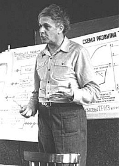

| LevSelector.com |
- Genrich S. Altshuller - father of TRIZ
- miscellaneous
- books on inventing
- pattenting
| triz | home - top of the page - |
TIPS (TRIZ), Theory of Inventive Problem Solving.
Genrich S. Altshuller (1926 - 1998) - the Father of TRIZ.
Author of many books (most famous - Creativity As an Exact Science).
Also author of several science fiction books (under name Genrich Altov)
* www.aitriz.org/altshuller.htm
- THE ALTSHULLER INSTITUTE. FOR TRIZ STUDIES.
* www.invention-machine.com
- Invention Machine Corporation
TRIZ is probably one of the most profound inventions of 20th century.
It is now used in thousands of organizations around the world. There
are associations, magazines, discussions, books on the subject. TRIZ
gives you a proven algorithm of how to think to make inventions.
Instead of luck you now have a well defined proven method.
|  | Photo 1982.
NOTES TO THE INVENTIVE PROBLEM SOLVING ALGORITHM (ARIZ) by G. S. Altshuller (1985) ARIZ is a sophisticated tool. Do not use it for
solution of new problems if you have not passed at least the 80-hours course
of training.(+)
ARIZ have been sampled in solution of a lot of
problems, practically the whole pool of problems used in TRIZ training.
Forgetting this, some peoples propose "hot" improvements based on solution
of only one problem. These improvements may be useful for only this one
problem, but making it easier they, as a rule, hamper the solution of all
other problems...
|
Genrich S. Altshuller, born in the former Soviet Union in 1926. His first invention, for scuba diving, was when he was only 14 years old. Became a mechanical engineer. Served in the Soviet Navy as a patent expert in the 1940s. His job was to help inventors apply for patents. He found, however, that often he was asked to assist in solving problems as well. He started to search for standard methods of problem solving.
Altshuller screened over 200,000 patents looking for inventive problems and how they were solved. Of these (over 2,500,000 patents have now been screened), only 20% had somewhat inventive solutions; the rest were straight forward improvements. Altshuller more clearly defined an inventive problem as one in which the solution causes another problem to appear, such as increasing the strength of a metal plate causing its weight to get heavier. Usually, inventors must resort to a trade-off and compromise between the features and thus do not achieve an ideal solution. In his study of patents, Altshuller found that many described a solution that eliminated or resolved the contradiction and required no trade-off.
Altshuller categorized these patents in a novel way. Instead of classifying them by industry, such as automotive, aerospace, etc., he removed the subject matter to uncover the problem solving process. He found that often the same problems had been solved over and over again using one of only forty (40) fundamental inventive principles. If only later inventors had knowledge of the work of earlier ones, solutions could have been discovered more quickly and efficiently.
In the 1960s and 1970s, he categorized the solutions into five levels:
1 - Routine design problems solved by methods well known within the
specialty. No invention needed. About 32% of the solutions fell into this
level.
2 - Minor improvements to an existing system, by methods known within
the industry. Usually with some compromise. About 45% of the solutions
fell into this level.
3 - Fundamental improvement to an existing system, by methods known
outside the industry. Contradictions resolved. About 18% of the solutions
fell into this category.
4 - A new generation that uses a new principle to perform the primary
functions of the system. Solution found more in science than in technology.
About 4% of the solutions fell into this category.
5 - A rare scientific discovery or pioneering invention of essentially
a new system.
About 1% of the solutions fell into this category.
He also noted that with each succeeding level, the source of the solution
required broader
knowledge and more solutions to consider before an ideal one could
be found.
| miscellaneous | home - top of the page - |
* www.invention-machine.com
- Invention Machine Corporation
| Books on the subject available at Amazon.com: | home - top of the page - |
| 40 Principles: TRIZ Keys to Technical Innovation ~ Usually ships in
24 hours
Genrikh Altshuller, et al / Paperback / Published 1997 Our Price: $40.00 This is the first volume in Technical Innovation Centers TRIZ TOOLS Series. It includes the complete text of Genrich Altshullers classic 40 Principles, plus: Genrich Altshuller: Father of TRIZ, by Leonid Lerner. Introduction to TRIZ & Three Steps for Solving an Inventive Problem, by Lev Shulyak. TRIZ Contradiction Matrix, one of the most powerful TRIZ Tools for solving inventive problems. |
|
| And Suddenly the Inventor Appeared: TRIZ, the Theory of Inventive Problem
Solving ~ Usually ships in 24 hours
G. Altshuller / Paperback / Published 1996 Our Price: $40.00 This legendary book was first published in English in 1990. It has been re-translated and extensively revised, including material not found in the original translation. It is Altshuller's most popular book in Russia on how to become an inventor, and how to solve technical problems. |
|
| - / - | Creativity As an Exact Science : The Theory of the Solution of Inventive
Problems
Genrikh S. Altshuller / Hardcover / Published 1984 Our Price: $222.00 (Special Order) The main famous book - but bad translation |
| The Innovation Algorithm: TRIZ, Systematic Innovation and Technical
Creativity ~ Usually ships in 24 hours
Genrich Altshuller / Paperback / Published 1999 (312 pages) Our Price: $50.00 "A 'must read' book, this book is the result of over twenty years of research and analysis." |
|
| An Introduction to TRIZ ~ Usually ships in 24 hours
Ph.D. Stan Kaplan / Paperback Our Price: $20.00 |
|
| - / - | Solving Problems with TRIZ ~ Usually ships in 24 hours
Ph.D. Vladis Kosse / Paperback Our Price: $50.00 (123-page exercise handbook presents 176 complex problems from a variety of engineering disciplines) |
| Systematic Innovation : An Introduction to Triz (Theory of Inventive
Problem Solving) ~ Usually ships in 24 hours
John Terninko, et al / Paperback / Published 1998 Our Price: $23.96 ~ You Save: $5.99 (20%) |
|
| - / - | Tools of Classical TRIZ (266 pages 1999)~ Usually ships in 24 hours
B. Zlotin, A. Zusman G. Altshuller, V. Philatov / Paperback Our Price: $75.00 A compilation based on the works of G. Altshuller, Boris Zlotin, Alla Zusman and V. Philatov. This 266-page book clearly and concisely defines the TRIZ tools developed by genrich Altshuller. Perhaps the most comprehensive representtion of Classical TRIZ in existence, this publication will serve as a valuable resource for those knowledgeable in the theory and practice of TRIZ. Novices will find a wealth ofinformation, in an easy-to follow format that illustrates the depth and power of this unique and unparalleled methodology. |
| - / - | TRIZ in Progress (248 pages 1999) ~ Usually ships in 24 hours
Ideation Research Group / Paperback Our Price: $25.00 |
| - / - | TRIZ: Through the Eyes of An American TRIZ Specialist (88pages, 1997)
Sr. Dana W. Clarke / Paperback Our Price: $30.00 |
| - / - | The Science of Innovation: A Managerial Overview of the TRIZ Methodology
(82 pages, 1997)
Victor R. Fey, Eugene I. Rivin (Contributor) / Mass Market Paperback (Special Order) |
| - / - | Triz Research Report : An Approach to Systematic Innovation
Paperback / Published 1998 Our Price: $19.95 (Special Order) |
* www.triz.minsk.by/r/tt/980003.htm
* www.rusf.ru/fc/altov.htm
* www.usa.spb.ru/sf/books/tg/Altov_Genrih.html
* www.usa.spb.ru/sf/books/tg/Altov_Genrih,Zhuravleva_Valentina.html
* http://www.jps.net/triz/
-
* www.jps.net/triz/inventiveprincipes.htm
- The TRIZ Inventive Principles (36, 1973) - local_copy
* http://www.jps.net/triz/Altshuller-papers.htm
- papers by Genrich Saulovich Altshuller (in Russian, includes TRIZ text)
| patenting | home - top of the page - |
- http://www.uspto.gov/ - central
site. Read about disclosure document, provisional patent, utility patent.
Has searcheable database.
Note: the database is OK, but not complete. To do patent search you
will have to hire a professional and pay anywhere from $300 to $1000.
- http://www.uspto.gov/main/howdoi.htm
- http://www.uspto.gov/web/patents/howtopat.htm
- http://www.uspto.gov/web/offices/pac/utility/utility.htm
- utility patent
- http://www.uspto.gov/web/offices/pac/provapp.htm
- provisional patent
- http://www.uspto.gov/web/offices/pac/disdo.html
- disclosure document program